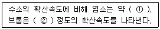
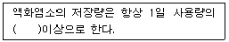
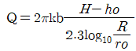
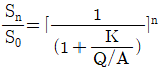
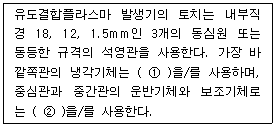
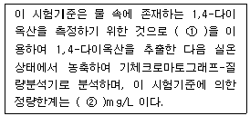
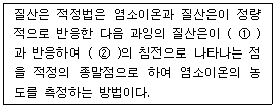
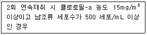

수질환경기사 (2011-08-21 기출문제)
1과목: 수질오염개론
1. 어느 공장의 COD가 6500mg/L, BOD5가 2100mg/L 이었다면 이 공장의 NBDCOD 는? (단, K = BODu/BOD5 = 1.5)
- 1850mg/L
- 2215mg/L
- 2685mg/L
- 3350mg/L
(정답률: 61%)

2. 다음 중 수질관리 모델에 해당하지 않는 것은?
- WASP model
- RAM model
- WQRRS model
- HSPF model
(정답률: 82%)
3. 25℃, 2 atm의 압력에 있는 메탄가스 15kg 을 저장하는데 필요한 탱크의 부피는? (단, 이상기체의 법칙 적용, R=0.082L·atm/mol·K(표준상태 기준))
- 11.45m3
- 12.45m3
- 13.45m3
- 14.45m3
(정답률: 46%)
4. 미생물을 진핵세포와 원핵세포로 나눌 때 원핵세포에는 없고 진핵세포에만 있는 것은?
- 리보솜
- 세포소기관
- 세포벽
- DNA
(정답률: 88%)
5. 합성세제 중 사차 수산화암모늄의 염으로 살균능력이 있어서 뜨거운 물이 없거나 사용해서는 안 되는 경우의 식기세척용 위생 세제, 아기들 기저귀 세탁 등에 이용되고 있는 것은?
- 음이온성 세제
- 비이온성 세제
- 양이온성 세제
- 활산성 세제
(정답률: 60%)
6. 소수성 콜로이드의 특성으로 옳지 않은 것은?
- 물과 반발하는 성질을 가진다.
- 물 속에 suspension으로 존재한다.
- 다량의 염을 첨가하여야만 응결 침전한다.
- 매우 작은 입자로 존재한다.
(정답률: 73%)
7. 다음 중 지하수의 특성으로 옳지 않은 것은?
- 자정속도가 느리다.
- 불용성 현탁물질은 여과에 의해 제거되지 않는다.
- 유속이 적고 국지적으로 환경조건의 영향을 크게 받는다.
- 유기물의 분해는 세균에 의해 주로 일어난다.
(정답률: 64%)
8. 생물학적 질화 중 아질산화에 관한 설명으로 옳지 않은 것은?
- 증식속도는 1.44∼3.08 day-1 범위 정도이다.
- 관련 미생물은 독립영양성 세균이다.
- 에너지원은 화학에너지이다.
- 산소가 필요하다.
(정답률: 58%)
9. 분체증식을 하는 미생물을 회분배양하는 경우 미생물은 시간에 따라 5단계를 거치게 된다. 이 5단계 중 생존한 미생물의 중량보다 미생물 원형질의 전체 중량이 더 크게 되며, 생물수가 최대가 되는 단계로 가장 적합한 것은?
- 증식단계
- 대수성장단계
- 감소성장단계
- 내생성장단계
(정답률: 75%)
10. 벤젠, 톨루엔, 에틸벤젠, 자일렌이 같은 몰수로 혼합된 용액이 라울트 법칙을 따른다고 가정하면 이 혼합액의 총 증기압(25℃ 기준)은? (단, 벤젠, 톨루엔, 에틸벤젠, 자일렌의 25℃에서 순수 액체의 증기압은 각각 0.126, 0.038, 0.0126, 0.01177 atm 이며, 기타 조건은 고려하지 않음)
- 0.047 atm
- 0.⑤7 atm
- 0.067 atm
- 0.077 atm
(정답률: 61%)
11. 다음은 Graham의 기체법칙에 관한 내용이다. ( )안에 알맞은 것은?

- ① 1/4, ② 1/8
- ① 1/6, ② 1/9
- ① 1/9, ② 1/12
- ① 1/12, ② 1/16
(정답률: 73%)
12. 프로피온산(C2H5COOH) 0 .1M 용액이 4% 이온화 된다면 이온화 정수는?
- 1.7⨯10-4
- 7.6⨯10-4
- 8.3⨯10-5
- 9.3⨯10-5
(정답률: 51%)
13. 미생물과 그 특성에 관한 설명으로 옳지 않은 것은?
- Algae : 녹조류와 규조류 등은 조류 중 진핵조류에 해당한다.
- Fungi : 곰팡이와 효모를 총칭하며, 경험적 조성식이 C7H14O3N이다.
- Bacteria : 아주 작은 단세포생물로서 호기성 박테리아의 경험적 조성식은 C5H7O2N 이다.
- Protozoa : 대개 호기성이며 크기가 100㎛이내가 많다.
(정답률: 75%)
14. 물의 특성에 관한 설명으로 가장 거리가 먼 것은?
- 수소와 산소의 공유결합 및 수소결합으로 되어 있다.
- 수온이 감소하면 물의 점성도도 감소한다.
- 물의 점도는 표준상태에서 대기의 대략 100배 정도이다.
- 물분자 사이의 수소결합으로 큰 표면장력을 갖는다.
(정답률: 84%)
15. 분뇨에 관한 설명으로 가장 거리가 먼 것은?
- 분뇨의 영양물질은 NH4HCO3 및 (NH4)2CO3 형태로 존재하며 소화조 내의 알칼리도 유지 및 pH 강하를 막아주는 완충역할을 담당한다.
- 분과 뇨의 구성비는 약 1:8∼10 정도이며 고액 분리가 어렵다.
- 뇨의 경우 질소화합물은 전체 VS의 10∼20% 정도 함유하고 있다.
- 분뇨의 비중은 1.02, 점도는 비점도로서 1.2∼2.2 정도 이다.
(정답률: 76%)
16. 호수의 수질특성에 관한 설명으로 옳지 않은 것은?
- 표수층에서 조류의 활발한 광합성 활동시 호수의 pH는 8∼9 혹은 그 이상을 나타낼 수 있다.
- 호수의 유기물량 측정을 위한 항목은 COD보다 BOD와 클로로필-a를 많이 이용한다.
- 수심별 전기전도도의 차이는 수온의 효과와 용존된 오염물질의 농도차로 인한 결과이다.
- 표수층에서 조류의 활발한 광합성 활동시에는 무기탄소원인 HCO3-나 CO32-을 흡수하고 OH-를 내보낸다.
(정답률: 66%)
17. 우리나라의 수자원 이용현황 중 가장 많이 이용되어져 온 용수는?
- 공업용수
- 농업용수
- 생활용수
- 유지용수(하천)
(정답률: 87%)
18. 수질예측모형의 공간성에 따른 분류에 관한 설명으로 옳지 않은 것은?
- 0차원 모형: 식물성 플랑크톤의 계절적 변동사항에 주로 이용된다.
- 1차원 모형: 하천이나 호수를 종방향 또는 횡방향의 연속교반 반응조로 가정한다.
- 2차원 모형: 수질의 변동이 일방향성이 아닌 이방향성으로 분포하는 것으로 가정한다.
- 3차원 모형: 대호수의 순환 패턴분석에 이용된다.
(정답률: 72%)
19. 어떤 저수지의 용량이 3.3⨯106m3 이고 일시적인 이유로 염분농도가 1.5%가 되었다. 저수지에 유입되는 물의 양이 연간 6.2⨯107m3 이라면 염분농도가 8ppm으로 될 때 까지의 소요시간은? (단, 일차반응(자연대수)기준, 저수지는 완전 혼합되며 저수지로 유입되는 물의 염분농도는 0, 단순희석만 고려함)
- 2.5개월
- 3.2개월
- 4.8개월
- 6.2개월
(정답률: 53%)
20. 하천의 길이가 500km이며, 유속은 56m/min이다. A 상류 지점의 BODu가 280ppm이라면, A 상류지점에서부터 378km 되는 하류지점의 BOD는? (단, 상용대수기준, 탈산소계수는 0.1/day, 수온은 20℃, 기타조건은 고려하지 않음)
- 45mg/L
- 68mg/L
- 95mg/L
- 132mg/L
(정답률: 46%)
2과목: 상하수도계획
21. 상수처리시설인 급속여과지의 모래층의 두께는 여과모래의 유효경이 얼마일 때 60∼70cm를 표준으로 하는가?
- 0.1∼0.15mm
- 0.2∼0.3mm
- 0.45∼0.7mm
- 3∼5mm
(정답률: 50%)
22. 취수탑의 취수구에 관한 설명으로 가장 거리가 먼 것은?
- 단면현상은 정방형을 표준으로 한다.
- 취수탑의 내측이나 외측에 슬루스게이트(제수문), 버터플라이밸브 또는 제수밸브 등을 설치한다.
- 전면에는 협잡물을 제거하기 위한 스크린을 3∼5cm 간격으로 취수구의 전면에 설치한다.
- 최하단에 설치하는 취수구는 계획최저수위를 기준으로 하고 갈수시에도 계획취수량을 확실하게 취수할 수 있는 것으로 한다.
(정답률: 64%)
23. 하수 배제방식에는 분류식과 합류식이 있다. 다음 중 분류식에 대한 비교 설명으로 가장 거리가 먼 것은?
- 시공 시 대구경관거가 되면 좁은 도로에서의 매설에 어려움이 있으나, 관거내 보수면에서는 검사 및 수리가 비교적 용이하다.
- 처리장으로의 토사 유입이 합류식보다는 적은 편이다.
- 관거오접 사항에 관해서는 철저한 감시가 필요하다.
- 우천시의 월류가 없다.
(정답률: 44%)
24. 펌프의 토출량이 1.0m3/sec, 토출구의 유속이 3.55m/sec일 때 펌프의 구경은?
- 200mm
- 400mm
- 600mm
- 800mm
(정답률: 49%)
25. 다음은 상수의 소독(살균)설비 중 저장설비에 관한 내용이다. ( )안에 가장 적합한 것은?

- 3일분
- 5일분
- 10일분
- 50일분
(정답률: 60%)
26. 피압수 우물에서 영향원 직경 1km, 우물직경 1m, 피압대 수층의 두께 20m, 투수계수는 20m/day로 추정되었다면, 양수정에서의 수위 강하를 5m로 유지하기 위한 양수량은? (단,

)- 약 0.0⑤m3/sec
- 약 0.02m3/sec
- 약 0.⑤m3/sec
- 약 0.1m3/sec
(정답률: 32%)
27. 상수도시설 침사지의 구조에 관한 설명으로 옳지 않은 것은?
- 표면부하율은 200∼500mm/min을 표준으로 한다.
- 지내 평균유속은 2∼7cm/s를 표준으로 한다.
- 지의 상단 높이는 고수위보다 0.1∼0.3m의 여유고를 둔다.
- 지의 유효수심은 3∼4m를 표준으로 하고, 퇴사 심도를 0.5∼1m로 한다.
(정답률: 57%)
28. 취수시설 중 취수보의 위치 및 구조에 대한 고려사항으로 옳지 않은 것은?
- 유심이 취수구에 가까우며 안정되고 홍수에 의한 하상변화가 적은 지점으로 한다.
- 원칙적으로 철근콘크리트 구조로 한다.
- 침수 및 홍수시 수면상승으로 인하여 상류에 위치한 하천공작물 등에 미치는 영향이 적은 지점에 설치한다.
- 원칙적으로 홍수의 유심방향과 평행인 직선형으로 가능한 한 하천의 곡선부에 설치한다.
(정답률: 60%)
29. 펌프효율 η=80%, 전양정 H=16m인 조건하에서 양수량 Q=12L/sec로 펌프를 회전시킨다면 이 때 필요한 축동력은? (단, 전동기는 직결, 물의 밀도 r=1000kg/m3)
- 1.28kW
- 1.73kW
- 2.35kW
- 2.88kW
(정답률: 50%)
30. 하수관거의 단면형상이 계란형인 경우에 관한 설명으로 가장 거리가 먼 것은?
- 유량이 적은 경우 원형거에 비해 수리학적으로 유리하다.
- 수직방향의 시공에 정확도가 요구되므로 면밀한 시공이 필요하다.
- 재질에 따라 제조비가 늘어나는 경우가 있다.
- 원형거에 비해 관폭이 커도 되므로 수평방향의 토압에 유리하다.
(정답률: 54%)
31. 직경 200cm 원형관로에 물이 1/2 차서 흐를 경우, 이 관로의 경심은?
- 15cm
- 25cm
- 50cm
- 100cm
(정답률: 53%)
32. 상수처리를 위한 완속 여과지의 구조 및 형상에 관한 설명으로 옳지 않은 것은?
- 여과지 깊이는 하부집수장치의 높이에 자갈층 두께, 모래층 두께, 모래면 위의 수심과 여유고를 더하여 5.0∼7.5m를 표준으로 한다.
- 여과지의 형상은 직사각형을 표준으로 한다.
- 주위벽 상단은 지반보다 15cm 이상 높여 여과지 내로 오염수나 토사 등의 유입을 방지한다.
- 한랭지에서는 여과지의 물이 동결될 우려가 있는 경우나 또한 공중에서 날아드는 오염물질로 물이 오염될 우려가 있는 경우에는 여과지를 복개한다.
(정답률: 46%)
33. 상수도 시설의 기본계획 중 기본사항인 계획(목표)년도는?
- 계획수립시부터 10 ∼ 15년간을 표준으로 한다.
- 계획수립시부터 15 ∼ 20년간을 표준으로 한다.
- 계획수립시부터 20 ∼ 25년간을 표준으로 한다.
- 계획수립시부터 25 ∼ 30년간을 표준으로 한다.
(정답률: 64%)
34. 상수시설 중 배수시설을 설계하고 정비할 때에 설계상의 기본적인 사항 중 옳은 것은?
- 배수지의 용량은 시간변동조정용량, 비상시대처용량, 소화용수량 등을 고려하여 계획시간최대급수량의 24시간 분 이상을 표준으로 한다.
- 배수관을 계획할 때에 지역의 특성과 상황에 따라 직결급수의 범위를 확대하는 것 등으로 고려하여 최대정수압을 결정하며, 수압의 기준점은 시설물의 최고높이로 한다.
- 배수본관은 단순한 수지상 배관으로 하지 말고 가능한 한 상호 연결된 관망 형태로 구성한다.
- 배수지관의 경우 급수관을 분기하는 지점에서 배수관내의 최대정수압은 150kPa(약 1.53kgf/cm2)를 넘지 않도록 한다.
(정답률: 37%)
35. 막여과법을 정수처리에 적용하는 주된 선정 이유로 옳지 않은 것은?
- 막의 교환이나 세척 없이 반영구적으로 자동운전이 가능하여 유지관리 측면에서 에너지를 절약할 수 있다.
- 막의 특성에 따라 원수 중의 현탁물질, 콜로이드, 세균류, 크립토스포리디움 등 일정한 크기 이상의 불순물을 제거할 수 있다.
- 부지면적이 종래보다 적을 뿐 아니라 시설의 건설공사 기간도 짧다.
- 응집제를 사용하지 않거나 또는 적게 사용한다.
(정답률: 47%)
36. 상수도 취수시 계획취수량 기준으로 가장 적합한 것은?
- 계획 1일 최대급수량의 10% 정도 증가된 수량으로 정함.
- 계획 1일 평균급수량의 10% 정도 증가된 수량으로 정함.
- 계획 1시간 최대급수량의 10% 정도 증가된 수량으로 정함.
- 계획 1시간 평균급수량의 10% 정도 증가된 수량으로 정함.
(정답률: 51%)
37. 상수시설의 급수설비 중 급수관 접속 시 설계기준과 관련한 고려사항(위험한 접속)으로 옳지 않은 것은?
- 급수관은 수도사업자가 관리하는 수도관 이외의 수도관이나 기타 오염의 원인으로 될 수 있는 관과 직접 연결해서는 안된다.
- 급수관을 방화수조, 수영장 등 오염의 원인이 될 우려가 있는 시설과 연결하는 경우에는 급수관의 토출구를 만수면보다 25mm 이상의 높이에 설치해야 한다.
- 대변기용 세척밸브는 유효한 진공파괴설비를 설치한 세척밸브나 대변기를 사용하는 경우를 제외하고는 급수관에 직결해서는 안된다.
- 저수조를 만들 경우에 급수관의 토출구는 수조의 만수면에서 급수관경 이상의 높이에 만들어야 한다. 다만, 관경이 50mm 이하의 경우는 그 높이를 최소 50mm로 한다.
(정답률: 50%)
38. 상수시설의 도수관 중 공기밸브의 설치에 관한 설명으로 옳지 않은 것은?
- 관로의 종단도상에서 상향 돌출부의 하단에 설치해야 하지만 제수밸브의 중간에 상향 돌출부가 없는 경우에는 높은 쪽의 제수밸브 바로 뒤쪽에 설치한다.
- 관경 400mm 이상의 관에는 반드시 급속공기밸브 또는 쌍구공기밸브를 설치하고, 관경 350mm 이하의 관에 대해서는 급속공기밸브 또는 단구공기밸브를 설치한다.
- 공기밸브에는 보수용의 제수밸브를 설치한다.
- 매설관에 설치하는 공기밸브에는 밸브실을 설치한다.
(정답률: 47%)
39. 상수시설 급수관의 배관에 관한 설명으로 옳지 않은 것은?
- 급수관을 공공도로에 부설할 경우에는 다른 매설물과의 간격을 30cm 이상 확보한다.
- 수요가의 대지 내에서 가능한 한 직선배관이 되도록 한다.
- 가급적 건물이나 콘크리트의 기초 아래를 횡단하여 배관하도록 한다.
- 급수관이 개거를 횡단하는 경우에는 가능한 한 개거의 아래로 부설한다.
(정답률: 58%)
40. 상수시설 중 도수관을 설계할 때 자연유하식인 경우 평균유속의 허용최대한도기준으로 옳은 것은?
- 0.3m/s
- 1.0m/s
- 3.0m/s
- 10.0m/s
(정답률: 42%)
3과목: 수질오염방지기술
41. 인구 6000명의 도시하수를 RBC로 처리한다. 평균유량은 380L/cap·day, 유입 BOD5는 200mg/L, 초기 침전조에서 BOD5는 33% 제거되며, 총 유출 BOD5는 20mg/L, 단수는 4 이다. 실험에서 K 는 50.6L/day·m2이라면 대수적 방법으로 구한 설계 수력학적 부하는? (단, 성능식:

)- Q/A : 65.4L/day·m2
- Q/A : 77.7L/day·m2
- Q/A : 83.1L/day·m2
- Q/A : 96.9L/day·m2
(정답률: 41%)
42. MLSS 농도가 2500mg/L인 혼합액을 1L 메스실린더에 취하여 30분 후 슬러지 부피를 측정한 결과 250mL이었다. 이 때 SVI는?
- 50
- 100
- 125
- 250
(정답률: 47%)
43. 다음 각 수질인자가 금속 하수도관의 부식에 미치는 영향으로 옳지 않은 것은?
- 잔류염소는 용존산소와 반응하여 금속 부식을 억제시킨다.
- 용존산소는 여러 부식 반응속도를 증가시킨다.
- 고농도의 염화물이나 황산염은 철, 구리, 납의 부식을 증가시킨다.
- 암모니아는 착화물의 형성을 통하여 구리, 납 등의 용해도를 증가시킬 수 있다.
(정답률: 57%)
44. 길이:폭의 비가 3:1인 장방형 침전조에 유량 850m3/d 의 흐름이 도입된다. 깊이는 4.0m 이고 체류시간은 1.92hr 이라면 표면부하율(m3/m2·d)은? (단, 흐름은 침전조 단면적에 균일하게 분배된다고 가정)
- 20
- 30
- 40
- 50
(정답률: 37%)
45. 하수처리방식 중 회전원판법에 관한 설명으로 가장 거리가 먼 것은?
- 활성슬러지법에 비해 2차침전지에서 미세한 SS가 유출되기 쉽고, 처리수의 투명도가 나쁘다.
- 운전관리상 조작이 간단한 편이다.
- 질산화가 거의 발생하지 않으며, pH 저하도 거의 없다.
- 소비 전력량이 소규모 처리시설에서는 표준 활성 슬러지법에 비하여 적은 편이다.
(정답률: 57%)
46. 부피가 2649m3인 탱크에서 G 값을 50/s로 유지하기 위해 필요한 이론적 소요동력과 패들 면적은? (단, 유체 점성 계수 1.139×10-3N·s/m2, 밀도 1000kg/m3, 직사각형 패들의 항력계수 1.8, 패들 주변속도 0.6m/s, 패들 상대속도는 패들 주변속도 × 0.75로 가정하며, 패들 면적은 A=[2P/(C·ρ·V3)]식을 적용한다.)
- 8543W, 104m2
- 8543W, 92m2
- 7543W, 104m2
- 7543W, 92m2
(정답률: 29%)
47. 활성슬러지 혼합액의 고형물을 0.26%에서 3% 까지 농축하고자 할 때 가압순환 흐름이 있는 경우의 부상농축기를 설계하고자 한다. 다음의 조건하에서 소요 순환유량은? (단, 최적공기/고형물비(A/S) = 0.06, 온도 = 20℃,공기용해도 = 18.7mL/L, 압력 = 3.7atm, 용존 공기비율 = 0.5, 슬러지 유량 = 400m3/day)
- 약 2500 m3/day
- 약 3000 m3/day
- 약 3500 m3/day
- 약 4000 m3/day
(정답률: 43%)
48. 하수소독시 적용되는 UV 소독방법에 관한 설명으로 옳지 않은 것은?(단, 오존 및 염소소독 방법과 비교)
- pH 변화에 관계없이 지속적인 살균이 가능하다.
- 유량과 수질의 변동에 대해 적응력이 강하다.
- 설치가 복잡하고, 전력 및 램프 수가 많이 소요되므로 유지비가 높다.
- 물이 혼탁하거나 탁도가 높으면 소독능력에 영향을 미친다.
(정답률: 59%)
49. 다음 중 암모니아 제거를 위한 파괴점 염소주입(Breakpoint Chlorination)의 단점으로 거리가 먼 것은?
- 약품비용이 많이 드는 편이다.
- THMs 등 건강에 해로운 물질이 생성될 수 있다.
- 용존성 고형물이 증가할 수 있다.
- pH를 10 이상으로 높여야 한다.
(정답률: 54%)
50. 생물학적 인, 질소제거 공정에서 호기조, 무산소조, 혐기조 공정의 주된 역할을 가장 알맞게 배열한 것은?(단, 순서는 호기조 - 무산소조 - 혐기조 이며, 유기물 제거는 고려하지 않음)
- 인의 과잉흡수 - 인의 방출 - 탈질소
- 인의 과잉흡수 - 탈질소 - 인의 방출
- 인의 방출 - 인의 과잉흡수 - 탈질소
- 인의 방출 - 탈질소 - 인의 과잉흡수
(정답률: 52%)
51. 다음의 생물화학적 인 및 질소제거 공법 중 인 제거만을 주목적으로 개발된 공법은?
- Phostrip
- A2/O
- UCT
- Bardenpho
(정답률: 58%)
52. 36mg/L의 암모늄 이온(NH4+)을 함유한 2500m3의 폐수를 50000g CaCO3/m3의 처리용량을 가지는 양이온 교환수지로 처리하고자 한다. 이 때 소요되는 양이온교환수지의 부피(m3)는?
- 3
- 4
- 5
- 6
(정답률: 35%)
53. NO3- 13mg/L가 탈질균에 의해 질소가스화 될 때 소요되는 이론적 메탄올의 양(mg/L)은? (단, 기타 유기 탄소원은 고려하지 않음)
- 2.8
- 3.6
- 4.3
- 5.6
(정답률: 30%)
54. 안정화지 시스템이 체류시간이 6일인 대형 안정화지 1개로 구성되어 있고, 이 시스템을 적용했을 때 BOD5의 제거 효율이 88% 이다. 안정화지가 완전혼합(CM)이라고 가정한다면 BOD 제거효율에 대한 반응속도상수는?
- 1.12/day
- 1.22/day
- 1.32/day
- 1.42/day
(정답률: 35%)
55. 분리막을 이용한 다음의 폐수처리방법 중 구동력이 농도차에 의한 것은?
- 역삼투(Reverse Osmosis)
- 투석(Dialysis)
- 한외여과(Ultrafiltration)
- 정밀여과(Microfiltration)
(정답률: 61%)
56. 환원처리공법으로 크롬함유 폐수를 수산화물 침전법으로 처리하고자 한다. 다음 중 침전을 위한 적정 pH 범위로 가장 적합한 것은? (단, Cr+3 + 3OH- → Cr(OH)3 ↓)
- pH 4.0 ∼ 4.5
- pH 5.5 ∼ 6.5
- pH 8.0 ∼ 8.5
- pH 11.0 ∼ 11.5
(정답률: 50%)
57. 다음 중 활성슬러지 공법으로 하·폐수처리시 슬러지 팽화(bulking)현상이 발생했을 때 사상균의 조절방법으로 거리가 먼 것은?
- 염소나 과산화수소를 반송슬러지에 주입한다.
- 선택반응조(selector)를 이용한다.
- fungi를 성장시켜 F/M비를 감소시킨다.
- 포기조 내의 용존산소의 농도를 변화시킨다.
(정답률: 53%)
58. G = 200/sec, V = 100 m3, 교반기 효율 80%, µ = 1.35 × 10-2 g/cm·sec일 때 소요동력 P(kW)는?
- 5.4kW
- 6.75kW
- 8.44kW
- 10.12kW
(정답률: 38%)
59. 유기성 폐수를 활성슬러지법으로 처리하는 종말처리장에서 포기조 반송슬러지량을 유입수량 대비 0.3 으로 운전하였고, 이 때 포기조의 SVI는 90이었다. 포기조의 MLSS농도(mg/L)는? (단, 유입수의 SS는 무시한다.)
- 2564
- 2971
- 3173
- 3452
(정답률: 36%)
60. 다음 중 고농도의 액상 PCB 처리방법과 가장 거리가 먼 것은?
- 방사선조사(Vo-25에 의한 δ선 조사)
- 연소법
- 자외선조사
- 고온 고압 알칼리 분해
(정답률: 43%)
4과목: 수질오염공정시험기준
61. 물벼룩을 이용한 급성 독성 시험법에서 사용하는 용어의 정의로 옳지 않은 것은?
- 치사(death) : 일정 비율로 준비된 시료에 물벼룩을 투입하고 24시간 경과 후 시험용기를 살며시 움직여주고, 15초후 관찰했을 때 아무 반응이 없는 경우를 치사라 판정한다.
- 유영저해(immobilization) : 독성물질에 의해 영향을 받아 일부 기관(촉각, 후복부 등)이 움직임이 없을 경우를 유영저해로 판정한다.
- 생태독성값(toxic unit) : 통계적 방법을 이용하여 반수영향농도 EC50(%)을 구한 후 이를 100 으로 나눠준 값을 말한다.
- 지수식 시험방법(static non-renewal test) : 시험기간 중 시험용액을 교환하여 농도를 지수적으로 계산하는 시험을 말한다.
(정답률: 38%)
62. 다량의 점토질 또는 규산염을 함유한 시료에 적용되는 전처리 방법으로 가장 적합한 것은?
- 질산-과염소산에 의한 분해
- 질산-과염소산-불화수소산에 의한 분해
- 질산-황산에 의한 분해
- 질산-염산에 의한 분해
(정답률: 37%)
63. 다음은 금속류 분석을 위한 유도결합플라스마-원자발광광도계 중 토치에 관한 설명이다. ( )안에 가장 적합한 것은?

- ① 질소, ② 헬륨
- ① 헬륨, ② 질소
- ① 아르곤, ② 아르곤
- ① 질소, ② 네온
(정답률: 33%)
64. 알킬수은의 시료 보존방법과 최대 보존기간으로 가장 적합한 것은?
- HNO3 2mL/L 가함, 1개월
- 4℃ 보관 및 H2SO4로 pH 2이하 유지, 7일
- 4℃ 보관 및 NaOH로 pH 12이상 유지, 7일
- 포르말린용액을 시료의 3∼5(V/V%)가함, 6개월
(정답률: 18%)
65. 식물성 플랑크톤을 저배율 방법(200배율 이하)을 이용한 현미경계수 분석방법에 관한 설명으로 옳지 않은 것은?
- 세즈윅-라프터 챔버는 조작은 어려우나 재현성이 높아서 중배율 이상에서도 관찰이 용이하며 미소 플랑크톤의 검경에 적절하다.
- 시료를 챔버에 채울 때 피펫은 입구가 넓은 것을 사용하는 것이 좋다.
- 계수 시 스트립을 이용할 경우, 양쪽 경계면에 걸린 개체는 하나의 경계면에 대해서만 계수한다.
- 계수 시 격자의 경우 격자 경계면에 걸린 개체는 4면 중 2면에 걸린 개체는 계수하고 나머지 2면에 들어온 개체는 계수하지 않는다.
(정답률: 33%)
66. 시료의 최대 보존기간이 다른 측정항목은?
- 유기인
- 총 질소
- 화학적산소요구량
- 황산이온
(정답률: 32%)
67. 다음은 1,4-다이옥산-용매추출/기체크로마토그래프-질량 분석법에 관한 설명이다. ( )안에 알맞은 것은?

- ① 노말헥산, ② 0.01
- ① 노말헥산, ② 0.⑤
- ① 다이클로로메탄, ② 0.01
- ① 다이클로로메탄, ② 0.⑤
(정답률: 23%)
68. 시험과 관련된 총칙에 관한 설명으로 옳지 않은 것은?
- “방울수” 라 함은 20℃에서 정제수 20방울을 적하할 때 그 부피가 약 1mL 되는 것을 뜻한다.
- “찬 곳” 은 따로 규정이 없는 한 0∼15℃의 곳을 뜻한다.
- “진공” 이라 함은 따로 규정이 없는 한 15mmH2O 이하를 말한다.
- “약” 이라 함은 기재된 양에 대하여 ±10% 이상의 차가 있어서는 안 된다.
(정답률: 40%)
69. I0단색광이 정색액을 통과할 때 그 빛의 50%가 흡수된다면 이 경우 흡광도는?
- 0.6
- 0.5
- 0.3
- 0.2
(정답률: 44%)
70. 총 유기탄소 분석 시 유기탄소를 이산화탄소로 산화하는 방법으로만 옳게 나열된 것은?
- 정전위전해 산화방법, 자외선-과황산 산화방법
- 고온연소 산화방법, 자외선-퍼클로레이트 산화방법
- 정전위전해 산화방법, 자외선-퍼클로레이트 산화방법
- 고온연소 산화방법, 자외선-과황산 산화방법
(정답률: 35%)
71. 측정 항목과 측정 방법에 관한 설명으로 옳지 않은 것은?
- 불소 : 란탄-알리자린 콤프렉손에 의한 착화합물의 흡광도를 측정한다.
- 시안 : pH 12∼13의 알칼리성에서 시안이온전극과 비교전극을 사용하여 전위를 측정한다.
- 크롬 : 산성용액에서 다이페닐카바자이드와 반응하여 생성하는 착화합물의 흡광도를 측정한다.
- 망간 : 황산산성에서 과황산칼륨으로 산화하여 생성된 과망간산 이온의 흡광도를 측정한다.
(정답률: 24%)
72. 시안 화합물 측정에 방해되는 물질의 제거방법으로 거리가 먼 것은?
- 시료에 함유된 황화합물은 아세트산아연 용액을 넣어 제거한다.
- 시료에 다량 함유된 아질산 이온은 L-아스코르빈산용액을 넣어 제거한다.
- 시료에 함유된 잔류염소는 아비산나트륨 용액을 넣어 제거한다.
- 시료에 다량으로 함유된 유지류는 pH를 6∼7로 조절한 후 노말헥산 또는 클로로폼을 넣어 분리 제거한다.
(정답률: 27%)
73. 다음은 염소이온의 측정원리에 관한 설명이다. ( )안에 알맞은 것은?

- ① 염화제일철, ② 염화제일철은
- ① 주석산, ② 주석산은
- ① 차아염소산염, ② 차아염소산염은
- ① 크롬산, ② 크롬산은
(정답률: 27%)
74. 음이온류 분석을 위한 이온크로마토그래피에 관한 설명으로 가장 거리가 먼 것은?
- 액체시료를 운반가스에 의해 분리관에 전개시켜 분리하는 각 성분의 크로마토그램을 분석하는 액체 크로마토 그래피의 일종이다.
- 기본구성은 용리액조, 시료주입부, 펌프, 분리컬럼, 출기 및 기록계로 되어 있다.
- 일반적으로 음이온 분석에는 전기 전도도 검출기를 이용한다.
- 일반적으로 미량의 시료를 사용하기 때문에 루프-밸브에 의한 주입방식이 많이 이용된다.
(정답률: 22%)
75. 어떤 공장의 폐수 중 노말헥산의 추출물질량을 측정하기 위해 실험을 한 결과 다음 값을 얻었다. 노말헥산 추출물질의 농도는? (단, 측정에 사용한 시료 500mL, 증발용 비이커의 순무게: 76.1452g, 추출에 사용된 노말헥산 증발 건조 후 비이커의 무게: 76.1988g 이었다.)
- 107.2mg/L
- 123.2mg/L
- 159.7mg/L
- 184.4mg/L
(정답률: 30%)
76. 석유계총탄화수소를 용매추출/기체크로마토그래피로 분석할 때 정량한계(mg/L)는?
- 0.1
- 0.2
- 0.3
- 0.5
(정답률: 22%)
77. 공장폐수 및 하수유량측정방법인 오리피스에 관한 설명으로 옳지 않은 것은?
- 설치에 비용이 적게 소요되며 비교적 유량 측정이 정확하다.
- 일직선상으로 관지름에 15∼50배 정도 떨어져 복수로 설치한다.
- 얇은 판 오리피스가 널리 이용되며 흐름의 수로 내에 설치한다.
- 단면이 축소되는 목부분을 조절함으로써 유량이 조절된다.
(정답률: 24%)
78. 용매추출/기체크로마토그래피에 의한 PCB 분석방법에 관한 설명으로 옳지 않은 것은?
- 정량한계는 0.00⑤mg/L 이다.
- 시료주입구 온도는 25∼50℃ 정도이다.
- ECD를 사용할 때 프탈레이트의 방해는 플라스틱 용기를 사용하지 않음으로서 최소화 할 수 있다.
- 실리카겔 컬럼 정제는 산, 염화페놀 등의 극성화합물을 제거하기 위하여 수행한다.
(정답률: 22%)
79. 물 속에 존재하는 비소의 측정방법으로 거리가 먼 것은? (단, 수질오염공정시험기준)
- 수소화물생성-원자흡수분광광도법
- 자외선/가시선 분광법
- 유도결합플라스마-질량분석법
- 이온크로마토그래피법
(정답률: 32%)
80. 수질분석용 시료 채취시 유의 사항과 가장 거리가 먼 것은?
- 채취용기는 시료를 채우기 전에 깨끗한 물로 3회 이상 씻은 다음 사용한다.
- 유류 또는 부유물질 등이 함유된 시료는 시료의 균일성이 유지될 수 있도록 채취하여야 하며 침전물 등이 부상하여 혼입되어서는 안된다.
- 용존가스, 환원성 물질, 휘발성유기화합물, 냄새, 유류 및 수소이온 등을 측정하는 시료는 시료용기에 가득 채워야 한다.
- 시료 채취량은 보통 3∼5L 정도이어야 한다.
(정답률: 52%)
5과목: 수질환경관계법규
81. 다음 수질오염방지시설 중 물리적 처리시설에 해당하는 것은?
- 소각시설
- 침전물 개량시설
- 흡착시설
- 증류시설
(정답률: 25%)
82. 환경부장관이 전국적인 수질 및 수생태계의 실태 파악을 위해 설치할 수 있는 측정망과 가장 거리가 먼 것은?
- 도심하천 측정망
- 비점오염원에서 배출되는 비점오염물질 측정망
- 퇴적물 측정망
- 생물 측정망
(정답률: 43%)
83. 환경기술인을 임명하지 아니하거나 임명(바꾸어 임명한 것을 포함한다)에 대한 신고를 하지 아니한 자에 대한 과태료 처분기준은?
- 200 만원 이하의 과태료
- 300 만원 이하의 과태료
- 500 만원 이하의 과태료
- 1000 만원 이하의 과태료
(정답률: 30%)
84. 비점오염저감시설의 설치기준으로 옳지 않은 것은?(단, 자연형 시설인 인공습지에 관한 기준)
- 인공습지의 유입구에서 유출구까지의 유로는 최대한 길게 하고, 길이 대 폭의 비율은 2:1 이상으로 한다.
- 유입부에서 유출부까지의 경사는 1.0% 이상 2.0% 이하의 범위를 초과하지 아니하도록 한다.
- 다양한 생태환경을 조성하기 위하여 인공습지 전체 면적 중 50%는 얕은 습지(0∼0.3미터), 30%는 깊은 습지(0.3∼1.0미터), 20%는 깊은 못(1∼2미터)으로 구성한다.
- 생물의 서식 공간을 창출하기 위하여 5∼7여종의 다양한 식물을 심어 생물다양성을 증가시킨다.
(정답률: 24%)
85. 수질오염경보인 조류경보 중 조류경보 단계시 관계기관별 조치사항으로 옳지 않은 것은?
- 수면관리자 : 취수구와 조류가 심한 지역에 대한 방어막 설치 등 조류 제거 조치 실시
- 수면관리자 : 황토 등 흡착제 살포, 조류 제거선 등을 이용한 조류제거 조치 실시
- 취수장, 정수장 관리자 : 조류증식 수심 이하로 취수구 이동
- 취수장, 정수장 관리자 : 정수처리 강화(활성탄 처리, 오존처리)
(정답률: 33%)
86. 특정수질유해물질이 아닌 것은?
- 1,4-트리클로로메탄
- 1,2-디클로로에탄
- 1,1-디클로로에틸렌
- 테트라클로로에틸렌
(정답률: 26%)
87. 위임업무 보고사항 중 “골프장 맹·고독성 농약 사용 여부 확인 결과” 의 보고기일 기준으로 옳은 것은?
- 수시
- 매분기 종료 후 15일 이내
- 매반기 종료 후 10일 이내
- 다음 해 1월 15일까지
(정답률: 31%)
88. 수질오염경보 중 수질오염감시경보 대상 수질오염물질이 아닌 것은?
- 용존산소
- 전기전도도
- 부유물질
- 총유기탄소
(정답률: 28%)
89. 폐수처리방법이 생물화학적 처리방법인 경우 환경부령이 정하는 시운전 기간은? (단, 가동개시일은 5월 1일이다.)
- 가동개시일부터 30일
- 가동개시일부터 50일
- 가동개시일부터 70일
- 가동개시일부터 90일
(정답률: 38%)
90. 수질 및 수생태계 환경기준 중 호소의 생활환경 기준항목인 클로로필-a 기준(mg/m3)으로 옳은 것은?(오류 신고가 접수된 문제입니다. 반드시 정답과 해설을 확인하시기 바랍니다.)
- 3 이하
- 5 이하
- 9 이하
- 14 이하
(정답률: 16%)
91. 수질 및 수생태계 환경기준 중 하천의 사람의 건강보호 기준항목인 6가크롬 기준(mg/L)으로 옳은 것은?
- 0.01 이하
- 0.02 이하
- 0.⑤ 이하
- 0.08 이하
(정답률: 47%)
92. 폐수종말처리시설의 유지·관리기준 중 1일당 2천 세제곱미터 이상인 시설의 방류수 수질검사 실시주기(기준)로 가장 적합한 것은? (단, 방류수 수질은 현저하게 악화되지 않음)
- 월 1회 이상 실시
- 월 2회 이상 실시
- 주 1회 이상 실시
- 매일 실시
(정답률: 30%)
93. 초과부과금을 산정할 때 다음 중 1kg당 부과금액이 가장 높은 수질오염물질은?
- 크롬 및 그 화합물
- 카드뮴 및 그 화합물
- 구리 및 그 화합물
- 시안화합물
(정답률: 27%)
94. 다음 중 기본배출부과금 산정시 적용되는 사업장별 부과계수로 옳은 것은?
- 제1종 사업장은 2.0
- 제2종 사업장은 1.5
- 제3종 사업장은 1.3
- 제4종 사업장은 1.1
(정답률: 28%)
95. 대권역별 수질 및 수생태계 보전을 위한 기본계획에 포함되어야 할 사항과 가장 거리가 먼 것은?
- 수질오염 및 처리 현황
- 점오염원, 비점오염원 및 기타 수질오염원의 분포현황
- 상수원 및 물 이용 현황
- 수질오염 예방 및 저감대책
(정답률: 25%)
96. 발생폐수를 폐수종말 처리시설로 유입하고자 하는 폐수배출시설 설치자는 배수관거 등 배수설비를 기준에 맞게 설치하여야 한다. 다음 중 배수설비의 설치방법 및 구조기준으로 옳지 않은 것은?
- 배수관의 관경은 내경 150mm이상으로 하여야 한다.
- 배수관은 우수관과 분리하여 빗물이 혼합되지 아니하도록 설치하여야 한다.
- 배수관 입구에는 유효간격 10mm이하의 스크린을 설치하여야 한다.
- 배수관의 기점·종점·합류점·굴곡점과 관경·관종이 달라지는 지점에는 맨홀을 설치하여야 하며, 직선인 부분에는 내경의 150배 이하의 간격으로 맨홀을 설치하여야 한다.
(정답률: 32%)
97. 사업장의 규모별 구분(종별) 기준으로 옳은 것은?
- 제1종사업장 : 1일 폐수배출량이 3000m3이상인 사업장
- 제2종사업장 : 1일 폐수배출량이 1000m3이상, 2000m3미만인 사업장
- 제3종사업장 : 1일 폐수배출량이 200m3이상, 1000m3미만인 사업장
- 제4종사업장 : 1일 폐수배출량이 50m3이상, 200m3미만인 사업장
(정답률: 38%)
98. 변경승인을 받아야 할 폐수종말처리시설 기본계획의 중요사항 중 “환경부령이 정하는 중요사항” 의 변경(기준)으로 가장 적합한 것은?
- 총 사업비의 100분의 10 이상에 해당하는 사업비
- 총 사업비의 100분의 20 이상에 해당하는 사업비
- 총 사업비의 100분의 25 이상에 해당하는 사업비
- 총 사업비의 100분의 50 이상에 해당하는 사업비
(정답률: 23%)
99. 수질오염경보(조류경보) 단계 중 다음 발령기준에 해당하는 단계는?(오류 신고가 접수된 문제입니다. 반드시 정답과 해설을 확인하시기 바랍니다.)

- 조류주의보
- 조류경보
- 조류대발생경보
- 조류심각경보
(정답률: 27%)
100. 일일기준초과배출량 및 일일유량산정방법에 관한 설명으로 옳지 않은 것은?
- 특정수질유해물질의 배출허용기준 초과 일일오염물질 배출량은 소수점 이하 넷째 자리까지 계산한다.
- 배출농도의 단위는 리터당 밀리그램으로 한다.
- 일일조업시간은 측정하기 전 최근 조업한 30일간의 배출시간의 조업시간 평균치로서 HR 로 표시한다.
- 일일유량산정을 위한 측정유량의 단위는 분당 리터로 한다.
(정답률: 44%)
NBDCOD는 COD에서 BOD5를 보정한 값으로, BOD5가 높을수록 NBDCOD는 낮아진다. 따라서, 이 문제에서는 BOD5를 보정하여 COD에서 빼준 후, 계산하면 된다. K값은 BODu/BOD5로 주어졌으므로, 이를 이용하여 BOD5를 BODu로 환산한 후 계산한다.